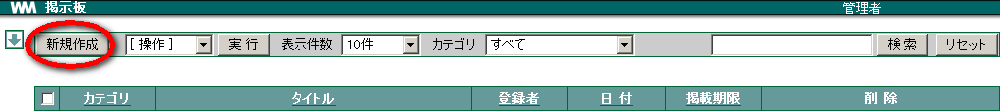
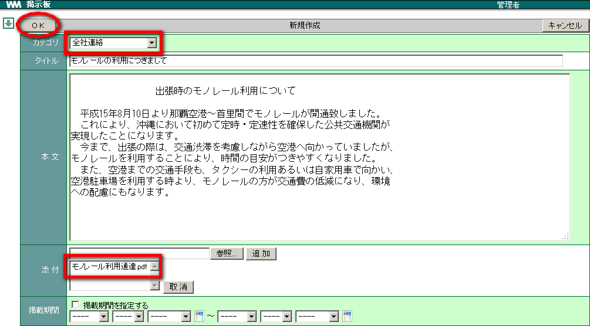
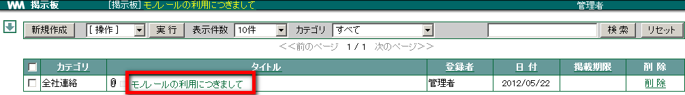
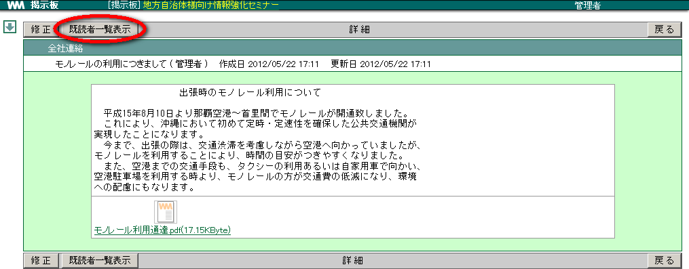
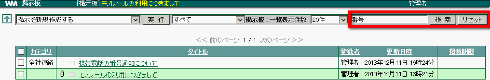
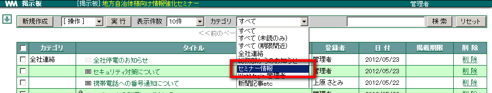
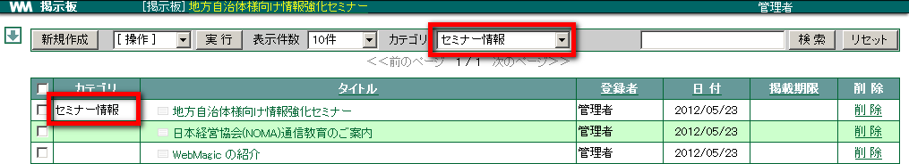

2. 掲示板¶
2.1. 掲示板に情報を登録する¶
新しい情報を掲示板に書き込みましょう。書き込んだ後でも編集することができます。
メニューの
 をクリックします。
をクリックします。新規作成 をクリックします。

「カテゴリ」を選択し、各項目を入力して OK をクリックします。

Note
ファイルを添付したい場合、 参照 をクリックしファイル名を指定、 追加 をクリックします。
指定したカテゴリに情報が登録されます。


2.2. 書き込まれている情報を読む¶
掲示板に書き込まれている情報を確認しましょう。
メニューの
をクリックします。読みたい情報の「タイトル」をクリックします。

情報の内容が表示されます。

2.2.1. 掲示文書の状態¶
登録された掲示文書は、件名の左側にある絵の状態で「既読」「未読」「添付」を確認することができます。
・・・ 既読済み情報・・・ 未読情報
・・・ 添付ファイル付き情報

2.2.2. 既読者一覧を表示する¶
記事を読んだ人、読んでない人の一覧を表示することができます。
読みたい情報の「タイトル」をクリックします。
既読者一覧表示 をクリックします。

別ウィンドウで既読・未読者一覧が表示されます。

Note
プルダウンメニューより「既読者一覧」「未読者一覧」「未読者・既読者一覧」を選択できます。
2.3. 書き込まれている情報を検索する¶
たくさんの情報が書き込まれている場合、検索機能を使うと読みたい情報をすぐに探し出せます。「タイトル」「登録者」に含まれる文字列から検索します。
メニューの
をクリックします。キーワードを入力し、 検索 をクリックします。

該当する情報のみが表示されます。検索した文字列が点滅します。


2.3.2. カテゴリごとに絞り込み表示¶
初期値では「すべて」カテゴリが表示されます。カテゴリが複数ある場合、カテゴリを切り替えて確認できます。
メニューの
をクリックします。［項目］から、表示させたいカテゴリを選択します。

選択したカテゴリのみが表示されます。

2.4. 登録した情報を修正する¶
掲示板に書き込んだ情報を修正しましょう。
メニューの
をクリックします。訂正したい情報の「タイトル」をクリックし、詳細情報を表示します。
修正 をクリックします。

内容を修正し、 OK をクリックします。